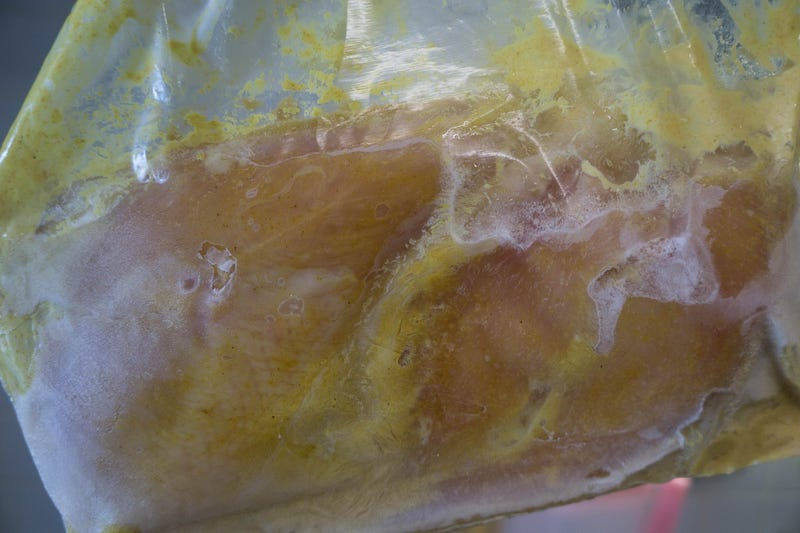
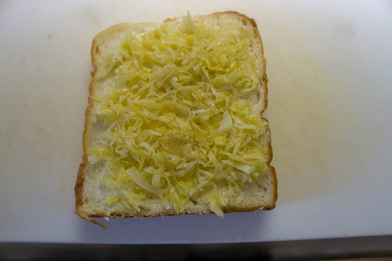
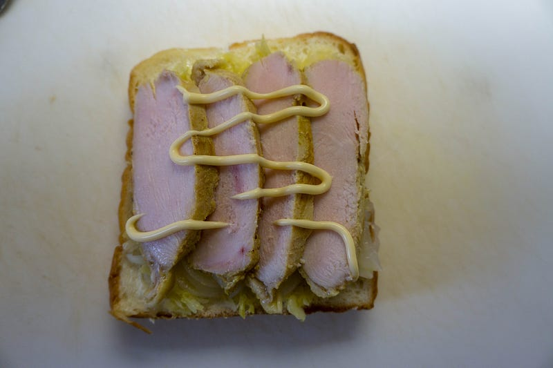
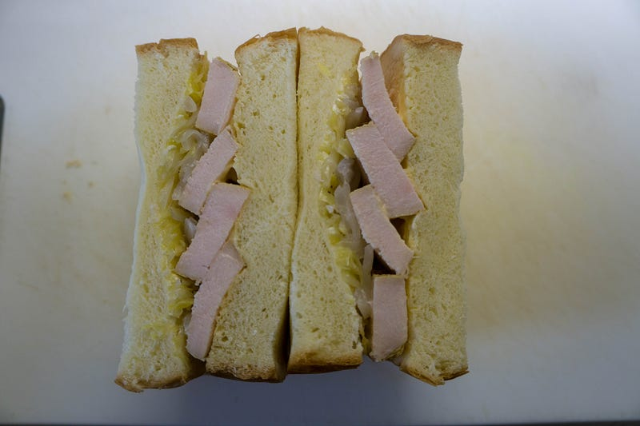
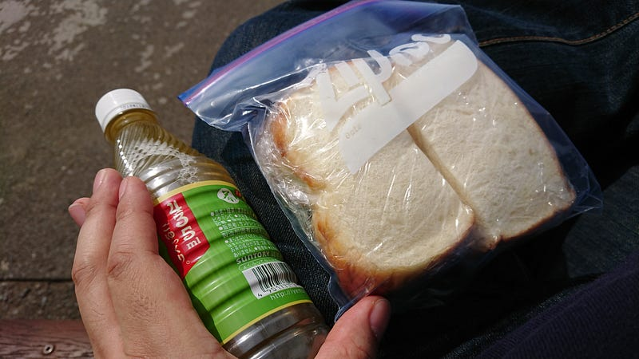
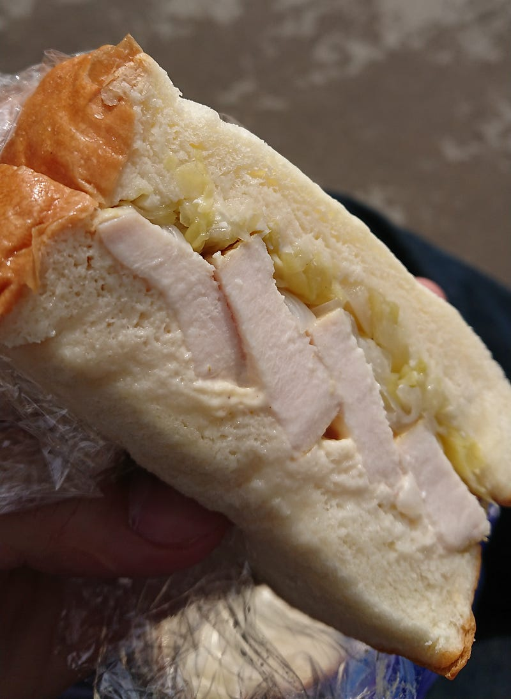

anovaでタンドリーチキンサンド
anovaでタンドリーチキンサンド
anovaでしっとり鶏胸肉はかなりおすすめ。以前anovaに手を出して比較的日が浅かった頃にやった時は鶏「ハム」を作ろうとして塩加減が微妙だったので、経験も積んだ今回はタンドリーチキンをした。
まぁ、とは言っても簡単な話で、カレー粉（SBの普通のヤツ）と無糖ヨーグルトに鶏胸肉をつっこんで、1日ほど冷蔵庫で寝かせて、あとは60℃前後で1時間〜2時間加熱した後表面を軽くフライパンで加熱するだけ。

1日寝かしたあとは保存のために冷凍しておいたけど、anovaならがちがち冷凍状態から2時間くらいで美味しく加熱できます。よりしっとりを目指すなら、解凍状態から59℃で2時間、冷凍なら〜3時間くらいでやるといいと思う。赤い部分はなくなるけれども、肉自体はしっとりと柔らかいのでよいです。
胸肉は厚くて味が中の方まで効きにくいので、このつけておいたタレを少し煮詰めてかけてあげるとよりおいしい。
タンドリーチキンは夕飯でも食べたのだけど、今回メインは翌日のタンリーチキンサンド。前の晩に加熱して軽く表面を焼いたものを翌日の弁当にしてもらった（妻がやってくれた）。

近所のパン屋の食パンに、なんかザワークラウト風味の酸っぱいキャベツ炒め。

そこにタンドリーチキンとマヨネーズ少々。なお、肉が若干赤いのは日を置いたのと、照明のせいです。

で、はさむとこう。
この日は大手町方面まで行く用事があったので春の日差しが気持ち良い皇居でお弁当をつかわせてもらった。


うむ、やはりカレーのほのかな香りとマヨは合う。そして鶏胸肉がたっぷりなので見た目よりけっこうガッツリ量がある。ちなみに目指した味はRichu 濱田屋のタンドリーチキンサンドです。
単体で食べても鶏胸肉の概念がかわるので、anovaのタンドリーチキンは超おすすめ。